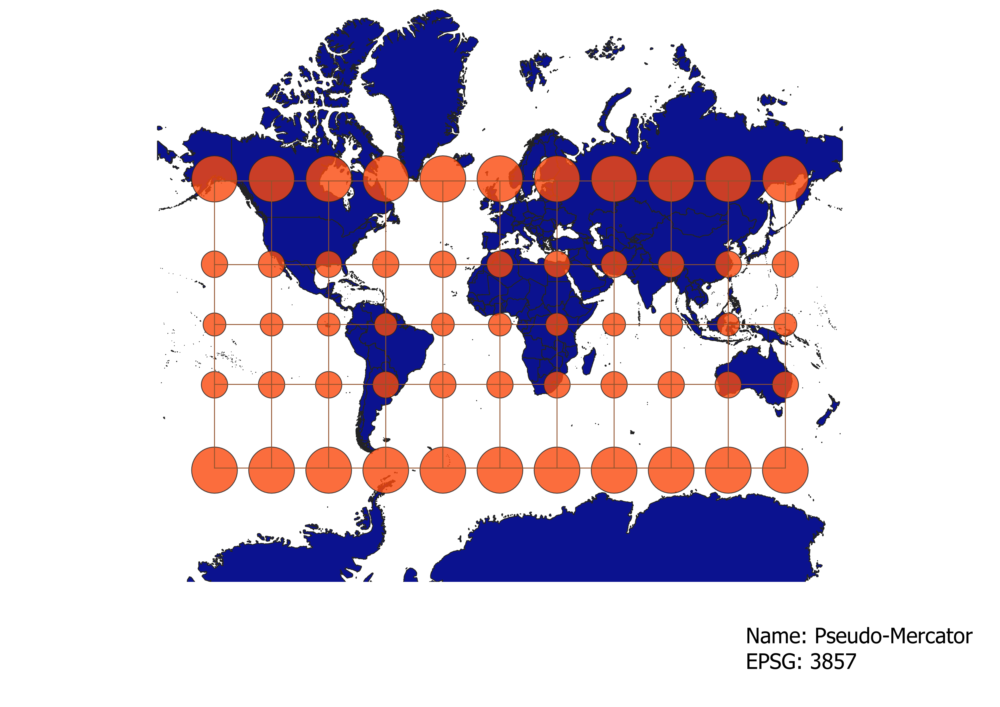
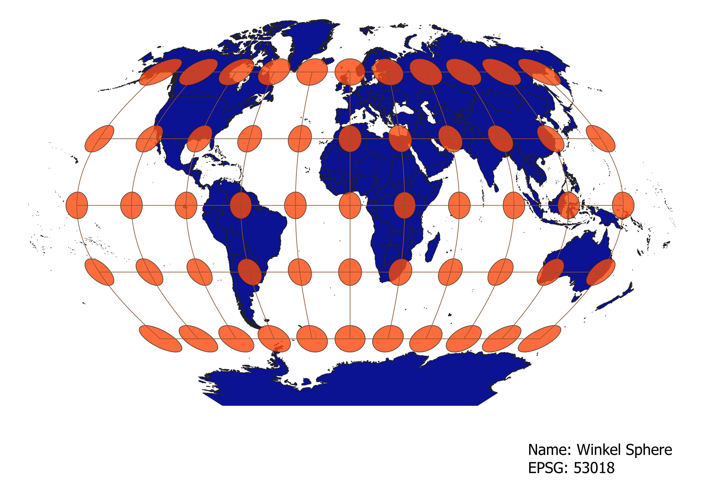

In this project I learned how to display images in different projections
Describe in your own words how you displayed the map in different projections using QGIS
To display the map in different projections in QGIS, you can change the map projection in the bottom right corner. This converts the way that the spatial data is represented on the canvas, and the indicatrix nodes represent the distortion that each map projection creates at selected points. From there, you can just make a New Layout with every projection to save it to a .png file.
WGS84 Projection
Some observations: this map distorts shape at the poles and size (but not to an extreme degree); overall this makes for a pleasant and relatively balanced projection.

Aitoff Projection
Some observations: this projection opts for a rounder field that distorts shape but keeps size relatively the same, and manages to convey the roundness of the Earth.

Pseudo-Mercator Projection
Some observations: this map distorts size at the poles but keeps shape the same, good for navigation but makes Greenland and other land near the poles appear enormous

Winkel Sphere Projection
Some observations: this map seems to strike a balance between distorting shape and size, while also preserving the round shape of the globe.

World Cylindrical Equal Area Projection
Some observations: this projection preserves area at the expense of severely distorting shape, countries near the poles are very stretched

World Equidistant Conic Projection
Some observations: conic projections are good at preserving shape and size along a narrow area (specfically lengthwise) but over the entire globe it leads to lots of spatial and size distortion the further south you go.

North Pole Azimuthal Equidistant Projection
Some observations: similar to the conic projection; the distortion increases dramatically the further you go from the north pole

Patterson Cylindrical Projection
Some observations: Similar to the Pseudo-Mercator and WGS84 projection by distorting size and shape at the poles

Bonne Projection
Some observations: sort of a bizarre projection that distorts the further you travel from the north pole and from the prime meridian

Data used for this project
Download Natural Earth 1:10m Cultural Vector